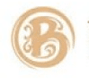
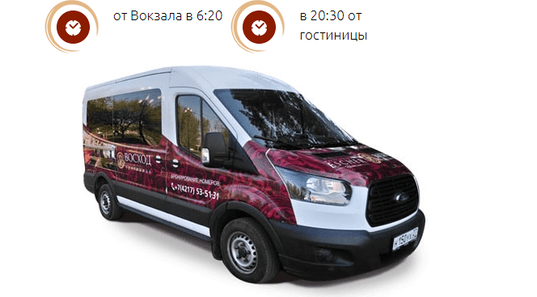
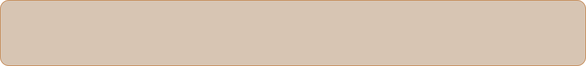
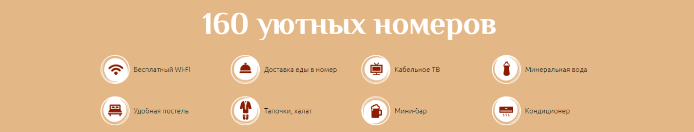

Бесплатный трансфер
(в будние дни)
гостиница восход

О нас
Регестрация
Поиск по сайту
Отличный гостевой сервис
Высокий уровень обслуживания, качественная инфраструктура внутри
самого комплекса и искренняя забота персонала о каждом госте – все
это делает гостиницу идеальным местом для комфортного пребывания
российских и иностранных туристов, в полной мере позволяющим
ощутить гостеприимство дальневосточного города.


Дата заезда
Дата выезда
Гости

Вход
Удачное расположение
Гостиница «Восход» - крупнейшая гостиница в городе
Комсомольске-на-Амуре, динамично развивающаяся и неизменно
пользующаяся популярностью среди российских и иностранных
туристов.
Гостиничный комплекс расположен в самом центре города
Комсомольска-на-Амуре, в шаговой доступности от транспортных
магистралей, магазинов, торговых и развлекательных центров,
городских достопримечательностей. Отель имеет небольшой
собственный парк для прогулок и отдыха.
Наши достижения
Высокий уровень оказываемых гостиницей услуг подтверждают
многочисленные звания и награды. Гостиница «Восход» является
лауреатом Всероссийского конкурса программы «100 лучших товаров
России» и имеет декларацию качества по его итогам; номинант
Международного экономического рейтинга «Лига Лучших»; имеет
золотую медаль отборочного этапа Межрегионального конкурса «Лучшие
товары и услуги по Дальнему Востоку – ГЕММА»; является
действительным членом Хабаровской ассоциации отельеров; состоит в
Российской гостиничной ассоциации.